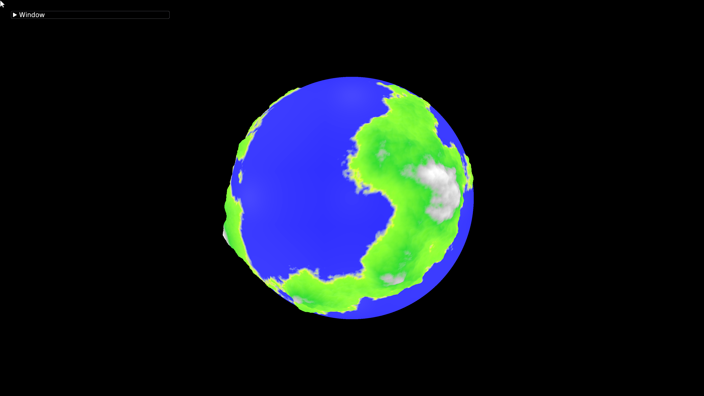
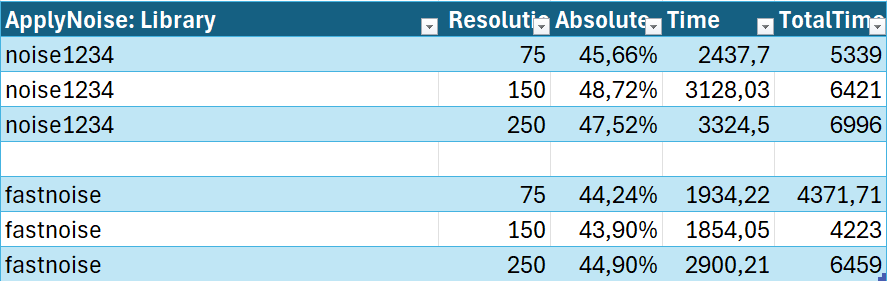

Procedural Planet Generation (PPG)
My goal was to make a procedural planet generator that can save the parameters and then load them in the game. The tool will use those parameters to regenerate the same planet.
This planet generator should be able to create more realistic Earth-like planets, and all these parameters inside the tool can change at runtime and regenerate the planet to make a planet that fits your game well. For a planet that can regenerate at runtime, it has to be very fast and efficient.

A sphere
Before we start with generating planets, we need to figure out how to make a sphere that we can use. The sphere needs to be able to support different resolutions so it's easy to increase or decrease the level of detail. The sphere should be distributed evenly, and it does not necessarily need to support textures.
I decided to go with the cube sphere, a common method to create a sphere in games. It makes the terrain generation simpler, since I am starting with 6 faces that I can easily remap to a sphere. It aligns with what I said earlier; the number of vertices can be increased, while still being distributed evenly along the planet.

Perlin Noise
The most known method of generating terrain with noise is done by Perlin noise. Below is an example of 2D Perlin noise; the highest value in the noise is 1.0 (white), and the lowest value is 0.0 (black). The reason that Perlin noise is favored for terrain generation is that it can create smooth and natural-looking landscapes. Unlike random noise, which creates chaotic and spiky terrain.
Fractal Noise
When talking about fractal noise, we are adding octaves to the noises; this is multiple layers of noise combined to form fractals in the noise, and it can give the terrain a more natural-looking feel.
Each octave will add finer detail to the terrain, keeping the large mountains, but also the small details. For every octave, the frequency increases by the lacunarity, and the amplitude decreases by the gain. By default, the lacunarity is 2.0, and the gain is 0.5. By increasing the lacunarity, the frequency will also increase faster, and this will create more lakes or gaps. The term "lacunarity" is derived from the Latin word "lacuna" meaning "gap" or "lake". By increasing the gain closer to 1.0, the octaves of the finer detail will have more influence, and this creates a more spiky terrain. By decreasing the gain, the octaves of the finer detail will have less influence, creating a flatter terrain.
| Octave | 1 | 2 | 3 | 4 | 5 | 6 | 7 | 8 |
|---|---|---|---|---|---|---|---|---|
| Frequency | 1 | 2 | 4 | 8 | 16 | 32 | 64 | 128 |
| Amplitude | 1 | 1/2 | 1/4 | 1/8 | 1/16 | 1/32 | 1/64 | 1/128 |
Code Calculation
The code below computes fractal noise using multiple octaves, which is a common technique in terrain generation and procedural textures. For the input, I multiply the point (point on the unit sphere) by the base frequency, and I add a position, which is just an offset in the noise.
I run the ApplyNoise function, which uses the selected library and noise function. As I said earlier, the noise returns a value between (-1, 1). For the terrain, I wanted the water level to start at 0 and change the vertices. To still keep the negative noise values, I am transforming it into (0, 1).
I finish the loop by multiplying by the amplitude and then changing the base frequency and amplitude by the lacunarity and gain as explained earlier.
After the loop, I apply a minValue to move the terrain down and get a noiseValue below 0. This does create a problem, because if there should be water from 0, you don't want the water to have any height as well. So I make sure to max the noise value to 0.0f.
// Octaves calculation
for ( int i = 0; i < octaves; i++ )
{
glm::vec3 input = point * baseFrequency + position;
float v = ApplyNoise(input);
noiseValue += (v + 1) * 0.5f * amplitude;
baseFrequency *= lacunarity;
amplitude *= gain;
}
float minValue = m_noise_settings.minValue;
noiseValue = noiseValue - minValue;
return max(noiseValue * strength, 0.0f);Noise Filters
A noise filter takes an input and creates an output. In this case, it takes in a point of the planet and outputs a noise value.
You can create multiple noise filters, and they have different methods of modifying the noise. The code I just showed is part of the simple noise filter. This creates an even amount of finer detail for the terrain. I will now compare that one to a different method, which is creating ridges. Ridges have rougher terrain at the higher parts and a smoother fall at the bottom.
Difference between Terrain
This might be a bit hard to see, so I also included the version of the normals, which shows the finer details better. You can see that for the ridges, the top of the terrain is much more detailed. However, on the bottom, it is much less detailed. You can see that there is almost no difference at the bottom part next to the beach on the planet.
Code Ridges
The code below computes fractal noise using multiple octaves, which is a common technique in terrain generation and procedural textures.
for ( int i = 0; i < octaves; i++ )
{
glm::vec3 input = point * baseFrequency + position;
float v = 1 - std::abs(ApplyNoise(input));
v *= v;
v *= weigth;
weigth = glm::clamp((v * weightMultiplier), 0.0f, 1.0f);
noiseValue += v * amplitude;
baseFrequency *= lacunarity;
amplitude *= gain;
}
float minValue = m_noise_settings.minValue;
noiseValue = noiseValue - minValue;
return noiseValue * strength;Challenges and Solutions
One of the problems that I was facing with the planet is that every time I reload the tool, I had to redo the parameters. So the solution for this would be serialization. I learned about the nlohmann/json library. This library adds support for serialization of your structs in your code and then being able to store it. Using this library also solved other problems for me; for example, it was easier to profile since I could restart the tool with the same settings with different resolutions.
There comes one complex problem with the cube sphere: it is impossible to apply a 2D texture to a sphere without introducing seams. When taking a look at the normals at different resolutions (16, 32, 64, 256). The seams are the most visible at the lowest resolution (16).
However, I found 2 solutions to solve this problem. The first solution is by following the article from Seamless Cube Sphere - Catlike Coding. They explain how to modify the cube sphere so it only has positioned data and takes advantage of the GPU. This is a good solution since the GPU wasn't busy, and now it has more work to do. So it is splitting the workflow and calculating the normals, texcoords, and what you need on the GPU. There is one problem; it does not state anything about the noise calculation. I assume that the noise has to be done on the GPU too, and this entirely changes the project, which I didn't plan to do.
For solution 2, it would be from this post about removing seams between procedurally generated spherical terrain tiles. It doesn't go very in-depth on the solution itself, but the suggested solution was simple.
for (int x = -1; x < resolution + 1; x++)
{
for (int y = -1; y < resolution + 1; y++)
{
...Instead of going over the normal resolution, you just make it a bit bigger. This is to calculate the correct normals for the outer vertices of each face. Once everything is calculated, you trim the array and make sure you only output the correct vertices of the resolution.
RecalculateNormals(out_vertices, out_indices, out_normals);
TrimPaddedGridInPlace(out_vertices, out_normals, out_indices, resolution_padding, pad);When taking a look once more at the normals at different resolutions (16, 32, 64, 256). You don't notice the seams anymore.
Results
Since my planet needed to be efficient, I did some profiling. I noticed that the point generated on the sphere is the most expensive, with about 45% that is a calculation of the noise and octaves. I started comparing the multiple noise libraries that I had included in the project. Noise1234 and Fastnoise-legacy.
So inside the ApplyNoise function, which handles selecting the correct noise and applies the correct noise settings. I compared the libraries by speed. The Noise1234 library was using Perlin Noise, while the FastNoise library was using Simplex Noise. Simplex noise recreates similar results as Perlin noise, but it uses a different algorithm.

The total time here is the profiled area. On average, Noise1234 took about 47% of the total time, and FastNoise took about 44% of the total time. This makes FastNoise, on average, about 6.65% faster than Noise1234, with its highest speed-up at almost 11% for a resolution of 150. The table does show that FastNoise scales worse than Noise1234, but there is not enough data to assume this.
The next steps for optimizing this tool even more would be multithreading. Besides that it gives an extreme speed-up, it also has another advantage. With multithreading, the regeneration of the planet can be done in the background. This allows the tool to first regenerate the planet at a lower resolution and then start with creating a higher resolution generation of the planet in the background, so the user does not have any slowdowns and can still make use of the highest quality.
Conclusion
For improvements in the feature, LODs support would be the next feature because this would allow the planet to update certain chunks on the planet to keep the details always at a high level without having to keep the rest of the planet at a high resolution. I recommend checking out Rendering Massive Terrains using chunked Level of Detail Control if you are interested in doing LODs. As I said in Results, for optimization, the next step would be multithreading because of the advantages that it provides. Besides that I am using a relatively old library, I recommend using FastNoise2 instead, but unfortunately I didn't end up having time to change to this faster library myself.